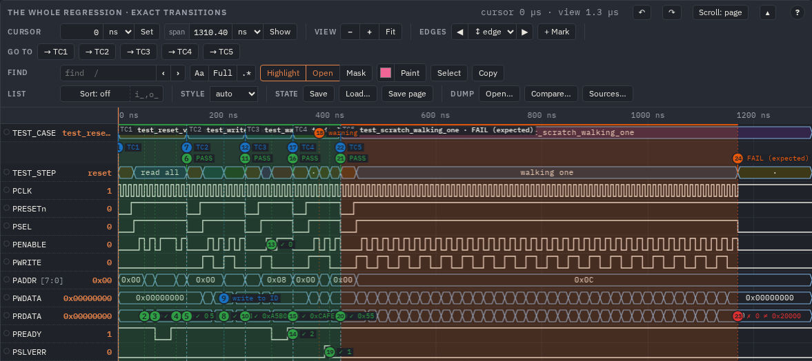
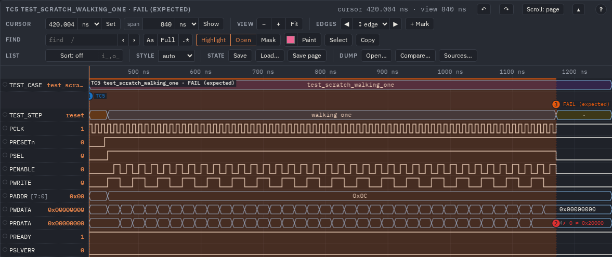

cocotb tests on the waves
A test says what it does, and the page of the run shows it: which test ran when, its phases, what it checked, PASS or FAIL with the expected value and the line of the test. On Verilator and on Questa, with the same five lines in the test, and the test still runs where WaveLens is not.
The example
examples/cocotb_apb is an APB3 register slave under five tests. The last finds a deliberate bug of the slave (bit 17 of
SCRATCH is lost) and is expect_fail, so the regression stays green with a failure on the page.
pip install cocotb # 2.0 or later
python3 examples/cocotb_apb/run.py # Verilator (5.036 or later)
python3 examples/cocotb_apb/run.py --sim questa # Questa: vlog and vsim on PATH
# or from the repository's Makefile:
make cocotb # out/examples/cocotb_apb/cocotb_apb.html
make cocotb SIM=questa # out/examples/cocotb_apb_questa/cocotb_apb.htmlEach leaves the simulator's files and dump.vcd in out/sim/, the marks in out/apb.marks.json and the
page in out/cocotb_apb.html. run.py --help has the rest: --out, --views, --test, --no-marks.

The testbench
Two variables nothing in the design reads, one the number of the running test, the other of its phase. So the run is in the dump itself,
also for what does not know the marks: sva diff --segment TEST_CASE, a span with "every": "TEST_CASE".
logic [15:0] TEST_CASE /* verilator public_flat_rw */;
logic [15:0] TEST_STEP /* verilator public_flat_rw */;
`ifndef VERILATOR // Verilator traces by itself; another simulator writes the VCD here
initial begin
$dumpfile("dump.vcd");
$dumpvars(0, cocotb_apb_tb);
end
`endifThe comment is for Verilator, which keeps only public variables within reach of cocotb; Questa takes it as a comment. Without the two the marks are still written: a warning says so, and a phase is a span on the test's row instead.
The test
from wavelens_cocotb import Marks
wl = Marks()
@wl.test() # cocotb.test(), the same arguments
async def test_wait_states(dut):
"""A read of DATA is stretched by two wait states.""" # into the test's first bookmark
await start(dut)
with wl.phase('read'): # a value of TEST_STEP
got, _, waits = await read(dut, DATA)
wl.check(waits, 2, 'wait states', signal=dut.PREADY) # a bookmark; a mismatch fails the test
wl.note('the slave stretched it', signal=dut.PREADY, label='wait')| Call | Does |
|---|---|
@wl.test(…) | cocotb.test(…) around the test: its number on TEST_CASE, a bookmark at its start and end, a span in the colour of its result |
wl.phase(label, signals=None) | with, not awaited: the time inside it is label on TEST_STEP; signals: a span on those rows instead In ReadOnly, where nothing can be written, its time stays exact: begun there it is a span on the TEST_STEP row. |
wl.step(label, signals=None) | the same phase in one line, until the next step or the end of the test: nothing to re-indent |
wl.note(text, signal, label, color) | a bookmark now |
wl.check(got, expected, text, signal, show, why) | a bookmark with both values; a mismatch fails the test; show='fail': no bookmark when they agree, for a check in a loop, and the test still counts it; why: the text of a failure, a string or a function called only then |
@wl.test(signals=["*fifo_full", "u_x.state"]): the test's own rows, names or patterns, added to its view when each test stands apart; a name the dump has not got is a lint warning. Marks(hide=["my_checks.py"]): a file that is not the line of a failure, as a frame that sets __tracebackhide__.
Warnings and errors logged during a test are bookmarks too. A test's result on the page is what cocotb says of it, expect_fail and
expect_error counted the same way: PASS green, FAIL red, FAIL (expected) orange.
The page
The dump is not finished while the test runs, so the page is built after the simulation, from the dump and the marks file the run left beside it
(WAVELENS_MARKS, default wavelens.marks.json):
python3 -I tools/mkhtml.py --config x.config.json --waves dump.vcd --marks wavelens.marks.json --out x.htmlA config needs only the view's signals: the example's is one view by hand; one that mkconfig.py made from the whole dump works too. The buttons
→ TC1 … in the bar's go to are the changes of TEST_CASE in the dump, so a marks file of another run shows at once.
Each test apart
--marks-views (the config's "marksViews") says how the tests are laid out:
| Value | The page |
|---|---|
whole (default) | all the tests on one waveform |
tests | a view of each test: its window, its marks, its doc and failure under the title; a button per test with its result, one test shown at a time; page.html#tc3 opens that one, a print has them all |
both | that, and the whole run as the first button |

PRDATA says what was expected.Each view holds its own window, so tests is about the size of whole and both twice that. A test's window goes a little
past its end, for the text of its last bookmark: that bit is the start of the next test, unmarked.
Verilator and Questa
The test does not change. What differs is in the build, and run.py holds it in one table:
| Verilator | Questa | |
|---|---|---|
| the dump | --trace, from the build | $dumpvars in the testbench (cocotb's own waves gives a .wlf) |
| what cocotb reaches | public variables: the comment above | -voptargs=+acc |
| the timescale | an option of the build | `timescale in the source |
| where it runs | the build's directory, for both: vsim finds its library there | |
The page is the same: over the example the marks files of the two are identical, every time and value, and the dumps agree up to the last time step, where
Questa ends before the test's last writes. Questa writes a port bit by bit (PADDR [7] …); the page shows the bus. Checked on Questa 2021.1.
A test that runs without WaveLens
The calls can stay in a test wherever it runs:
WAVELENS_MARKS=off(run.py --no-marks): plain cocotb. No signal written, no file, the logs left alone.- A tree without
wavelens_cocotb.py: the same calls from a few lines in the tests' common module:
try:
from wavelens_cocotb import Marks
except ImportError:
class Marks:
def __init__(self, *args, **kw): pass
def test(self, *args, signals=None, **kw): return cocotb.test(*args, **kw)
def phase(self, *args, **kw): return contextlib.nullcontext()
def step(self, *args, **kw): pass
def note(self, *args, **kw): pass
def check(self, got, expected, text='', **kw):
assert got == expected, f'{text}: got {got}, expected {expected}'Either way note, phase and step do nothing and check still compares and fails the test: a check that went quiet would
pass anything.
Your own design
- Copy
run.py, the test and the config of the example.HDL,TOP,MODULEandCONFIGat the top ofrun.pyare all it knows of the design. - Add
TEST_CASE,TEST_STEPand the dump to your testbench, as above. - Point it at WaveLens:
--wavelens PATH, orWAVELENS_HOME. Itspython/goes on the path of the simulator's Python,tools/mkhtml.pymakes the page. - With a Makefile of cocotb's instead of
run.py: putpython/onPYTHONPATH, and callmkhtml.pyafter the simulation.
For an AI agent
wave_tests reads the marks file: which tests failed, when, what they expected. The window it gives is the one to ask
wave_changes, wave_find or wave_sample about. wave_page with marks and marks_views makes the page
(AI agents (MCP)).
All the options: USAGE.md § Marks from a cocotb test.